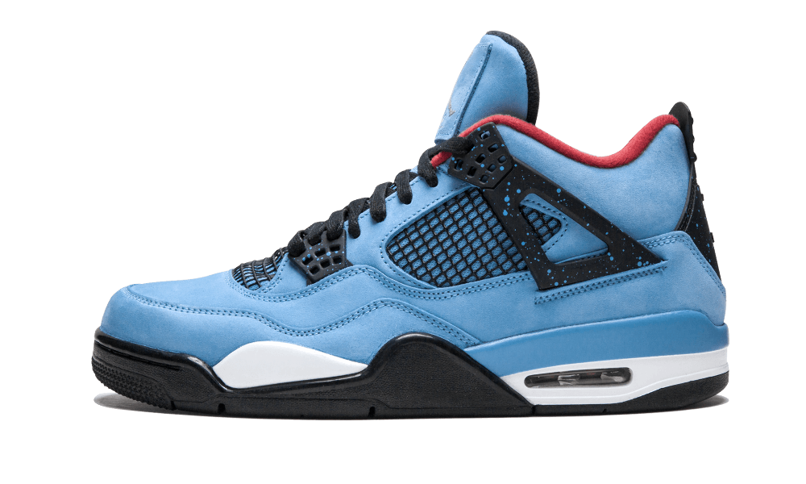
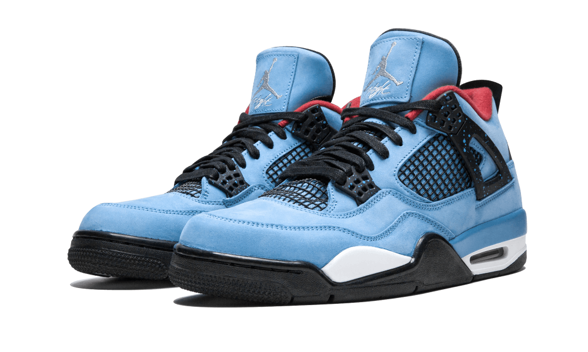
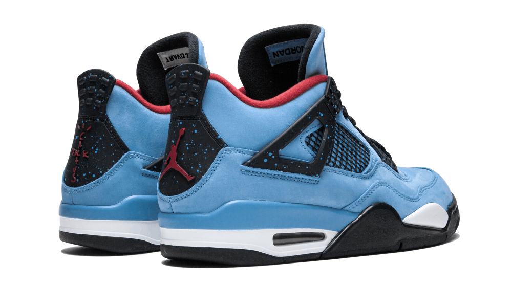
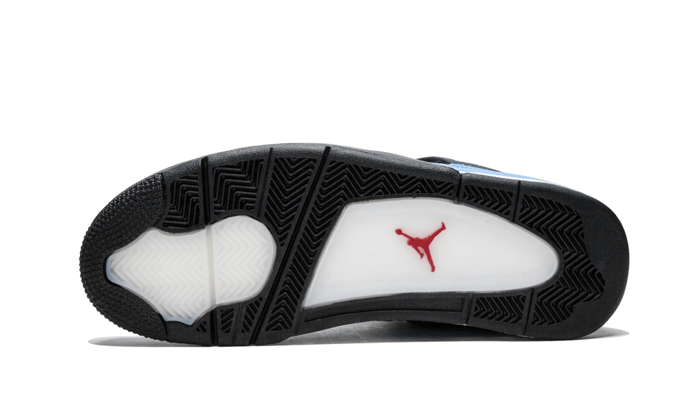

Nike Air Jordan 4 Travis Scott
The sneaker represents a collaboration between hip hop artist Travis Scott, record label founder and Houston sports fan enthusiast. The colourway features red, white and light blue which represents the design of the Houston football. The details on the heel counter and the inside of tongue of the shoe pays homage to the rapper and his label, Cactus Jack records.